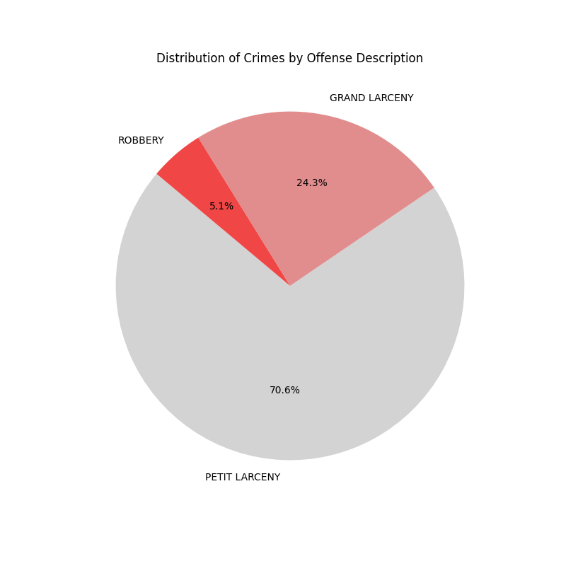

This project explores NYC bike theft data collected by the NYPD. We aim to analyse the data provided with different visualization methods learned throughout the course. The result is this site, presenting the findings in interesting interactive ways. Using this public dataset, we identify temporal and spatial trends and visualize them across boroughs. We didn't ignore the human aspect of the crime, looking at the characteristics of the victims and suspects.
Use the menu to quickly navigate to different page sections: learn about the dataset, explore visualizations, view the interactive theft map, and read our key findings.But first a few visuals to describe what we are working with.
NYC Open Data from the NYPD with more then 80m theft cases, location, and time info: Visit Dataset .
Data spans from 2006 to 2024.
All five boroughs: Manhattan, Brooklyn, Queens, Bronx, and Staten Island.
Regarding bike theft, there are three crime categories that the incident could be filed under: Grand Larceny, Petit Larceny, and Robbery. The distribution of our reported incidents between these categories can be seen below. As expected, in most cases, the cost of the bike fell under petit larceny.

For all these categories, the incident was unfortunately completed. The ratio between attempted and completed theft can be seen below. It is, however, natural that the attempted cases are overall low ,as it is rare someone would report a theft attempt. We thus conclude that all of the attempted cases were prevented by police interving.
div style="text-align: center;">We start our exploration of the data set with the temporal analysis. Using months instead of data for a clearer visual, we divide our dataset into boroughs, and we plot the district's incident counts over time.
The following Sankey diagrams illustrate the flow of crime data, separately for victims and suspects. Each chart visualizes how sex, race, and age group intersect within each group, highlighting the distribution and transitions between these attributes. In the victim Sankey diagram, . Similarly, the suspect Sankey diagram. Hovering over the links shows the actual number of people in the subcategory.